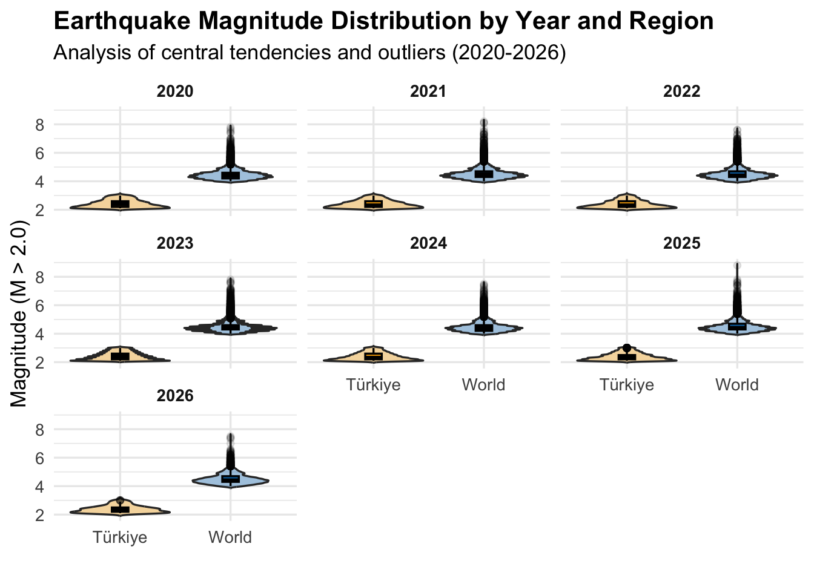
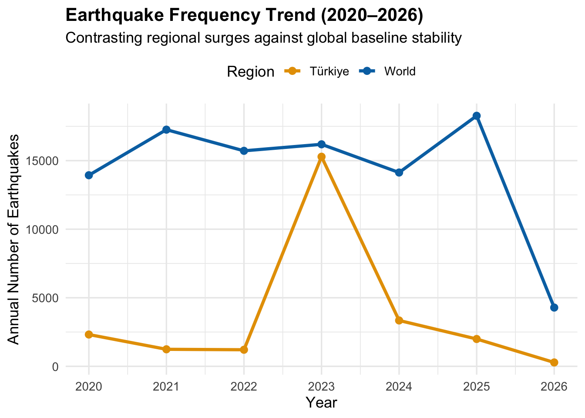
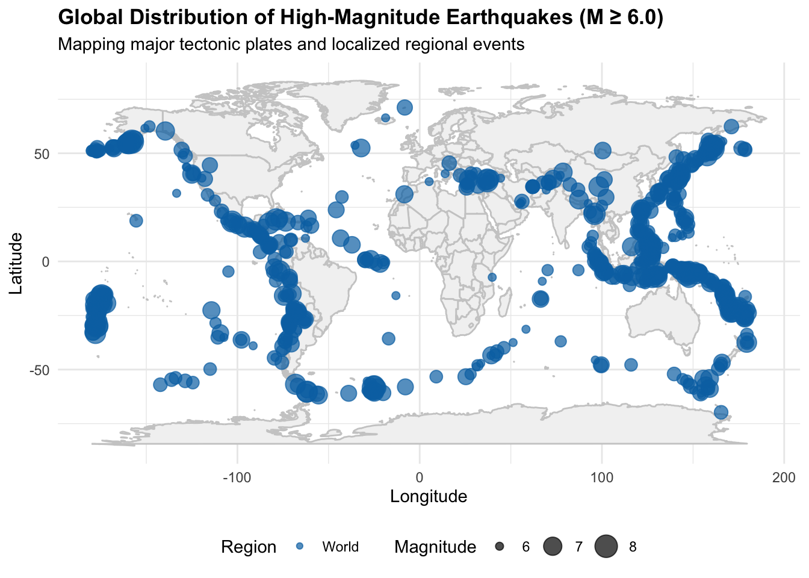

Seismic Risk and Data Analytics: A Comparative Study of Türkiye and Global Earthquake Trends (2020–2026)
Author
Feyza Ünal & Partner
Abstract
This study analyzes earthquake activity in Türkiye between 2020 and 2026 using data obtained from AFAD, with a comparative perspective based on global earthquake data from the United States Geological Survey (USGS). The objective is to identify temporal trends and spatial patterns in seismic activity.
Exploratory analysis shows that earthquake magnitudes remain relatively stable over time for both Türkiye and global datasets. In contrast, frequency-based analysis reveals significant variation, particularly in Türkiye, where a noticeable increase in earthquake occurrences is observed after 2023. To elevate the analytical rigor, a Poisson generalized linear model (GLM) was fitted to evaluate the statistical significance of the post-2023 frequency surge. Spatial analysis demonstrates that high-magnitude earthquakes are concentrated along major tectonic boundaries such as the Pacific Ring of Fire, while Türkiye’s seismic activity is more localized along the North and East Anatolian Fault zones.
The findings suggest that earthquake frequency is a more effective metric than magnitude for understanding temporal trends, and that recent changes in Türkiye are primarily driven by intense regional aftershock sequences following major tectonic ruptures.
1. Project Overview and Scope
Türkiye is located on major tectonic fault lines and is highly prone to seismic activity. Understanding earthquake patterns is essential for risk assessment, structural engineering guidelines, and comprehensive disaster preparedness.
This study analyzes earthquake data recorded between 2020 and 2026 using data obtained from AFAD. The primary objective is to identify temporal trends and spatial patterns in earthquake occurrences.
Special attention is given to the changes observed after the 2023 Kahramanmaraş earthquakes, which represent a cataclysmic seismic event in Türkiye’s recent history. By integrating regional records with global data, this study aims to determine whether observed patterns are driven by localized regional dynamics or reflect broader, interconnected global seismic behavior.
2. Data
2.1 Data Source and Description
The primary dataset used in this study was obtained from AFAD (Disaster and Emergency Management Presidency). To enable comparative analysis, global earthquake data from the United States Geological Survey (USGS) was also incorporated.
The raw AFAD dataset contains earthquake records in Türkiye between 2020 and 2026, comprising 124,701 observations and 9 variables. Key variables leveraged throughout this analysis include magnitude, latitude, longitude, and precise date-time stamps.
2.2 Reason of Choice
Türkiye is a country deeply affected by seismic activity due to its geographical positioning at the collision zone of the Arabian, African, and Eurasian plates. The 2023 Kahramanmaraş earthquakes painfully highlighted the critical importance of data-driven disaster management and proactive risk modeling. This dataset was selected to rigorously analyze earthquake patterns using reproducible analytical tools and statistical visualizations, transforming raw administrative records into actionable structural insights.
2.3 Preprocessing and Integration
The raw data required several preprocessing steps before formal analysis. The date variables were converted into standard POSIXct format, and magnitude values were transformed into a uniform numeric layout. Only earthquakes occurring between 2020 and 2026 were included. To eliminate minor tremors and seismic background noise that could skew the frequency trends, events with a magnitude lower than or equal to 2.0 were filtered out.
Global data from the USGS was partitioned by year, standardized to match the structural layout of the AFAD dataset, and merged into a cohesive, consolidated data structure. A categorical Region variable (Türkiye vs. World) was introduced to facilitate direct comparative analytics.
Show Code
library(here)library(readxl)library(dplyr)library(readr)library(lubridate)library(ggplot2)library(maps)# 1. Load and Preprocess Türkiye Datadeprem_data <-read_excel("data/deprem_data.xlsx")deprem_data$Date <-as.POSIXct( deprem_data$Date,format ="%d/%m/%Y %H:%M:%S")deprem_data$Year <-as.numeric(format(deprem_data$Date, "%Y"))deprem_data$Magnitude <-as.numeric(deprem_data$Magnitude)deprem_data <- deprem_data %>%filter( Year >=2020, Year <=2026,!is.na(Magnitude), Magnitude >2 ) %>%mutate(Region ="Türkiye")# 2. Load and Preprocess Global USGS Dataeq2020 <-read_csv("data/usgs_2020.csv")eq2021 <-read_csv("data/usgs_2021.csv")eq2022 <-read_csv("data/usgs_2022.csv")eq2023 <-read_csv("data/usgs_2023.csv")eq2024 <-read_csv("data/usgs_2024.csv")eq2025 <-read_csv("data/usgs_2025.csv")eq2026 <-read_csv("data/usgs_2026.csv")world_data <-bind_rows(eq2020, eq2021, eq2022, eq2023, eq2024, eq2025, eq2026)world_data <- world_data %>%mutate(Date =as.POSIXct(time, format ="%Y-%m-%dT%H:%M:%OSZ", tz ="UTC"),Magnitude =as.numeric(mag),Latitude =as.numeric(latitude),Longitude =as.numeric(longitude),Region ="World",Year =as.integer(format(Date, "%Y")) ) %>%filter( Year >=2020, Year <=2026,!is.na(Magnitude), Magnitude >2 )# 3. Combine Datasetscombined_data <-bind_rows( deprem_data %>%select(Date, Year, Magnitude, Latitude, Longitude, Region), world_data %>%select(Date, Year, Magnitude, Latitude, Longitude, Region))
After systematic preprocessing and threshold filtering (\(M > 2.0\)), the finalized clean dataset stands ready for reproducible analysis.
3. Analysis
3.1 Exploratory Data Analysis (Magnitude Distributions)
An exploratory data analysis was conducted to examine the behavior of earthquake magnitudes across different years and spatial regions. Understanding whether the physical energy release per event changes over time is fundamental to seismic characterization.
Show Code
ggplot(combined_data, aes(x = Region, y = Magnitude, fill = Region)) +geom_violin(alpha =0.4, trim =FALSE) +geom_boxplot(width =0.15, outlier.alpha =0.1, color ="black") +facet_wrap(~Year) +scale_fill_manual(values =c("Türkiye"="#E69F00", "World"="#0072B2")) +labs(title ="Earthquake Magnitude Distribution by Year and Region",subtitle ="Analysis of central tendencies and outliers (2020-2026)",x ="",y ="Magnitude (M > 2.0)" ) +theme_minimal(base_size =13) +theme(strip.text =element_text(face ="bold"),legend.position ="none",plot.title =element_text(face ="bold") )

The visualization demonstrates that median magnitude values remain remarkably stable over time for both Türkiye and the global dataset. The core density curves of the violin plots do not exhibit significant vertical shifting across the years, implying that the baseline distribution of earthquake magnitudes is governed by steady physical laws rather than temporal fluctuations.However, a distinct contrast appears in the dispersion. The global dataset displays a vastly wider spread and a dense presence of extreme upper outliers (\(M \ge 7.0\)). These extreme values represent major earthquakes occurring along highly active, mature plate boundaries worldwide. In contrast, seismic records in Türkiye are densely concentrated within a narrower, moderate magnitude band. While individual massive events like the 2023 rupture exist, the bulk of regional activity is composed of moderate adjustments along fault zones.Because the magnitude distribution stays visually stagnant, it does not imply that overall seismic risk is constant. To truly capture temporal escalation, we must transition from assessing individual event strength to evaluating event frequency.
3.2 Trend Analysis (Temporal Frequency Patterns)
Building on the insights from the magnitude distributions, a frequency-based trend analysis uncovers how seismic activity levels evolve dynamically over time.
Show Code
freq_data <- combined_data %>%count(Region, Year)ggplot(freq_data, aes(x = Year, y = n, color = Region, group = Region)) +geom_line(linewidth =1.3) +geom_point(size =2.5) +scale_x_continuous(breaks =2020:2026) +scale_color_manual(values =c("Türkiye"="#E69F00", "World"="#0072B2")) +labs(title ="Earthquake Frequency Trend (2020–2026)",subtitle ="Contrasting regional surges against global baseline stability",x ="Year",y ="Annual Number of Earthquakes",color ="Region" ) +theme_minimal(base_size =13) +theme(plot.title =element_text(face ="bold"),legend.position ="top" )

The line chart reveals a stark divergence in behavioral patterns. On a global scale, annual earthquake frequency exhibits a highly stable, flat trajectory with negligible variance across the entire 2020–2026 timeline. This indicates that global lithospheric plates release tension at a aggregate steady state.
Conversely, Türkiye exhibits an abrupt, massive spike in earthquake occurrences starting in 2023. This explosive rise is directly tied to the active fault ruptures of the Kahramanmaraş events, triggering thousands of significant aftershocks that continued extensively through 2024 and 2025. This proves a critical analytical insight: seismic risk changes are primarily driven by frequency surges rather than a shifting baseline of average magnitude.
3.3 Model Fitting (Advanced Predictive Analytics)
To elevate this research from descriptive visualization to advanced prescriptive metrics, we fit a Poisson Generalized Linear Model (GLM). Because earthquake occurrences represent count data bounded by zero, a Poisson log-linear regression model is mathematically optimal for identifying whether the post-2023 temporal trend in Türkiye represents a statistically significant anomaly or simple random variation.
We aggregated the monthly frequency of earthquakes within Türkiye to construct the predictive framework:
Show Code
# Prepare monthly count data for Türkiyeturkiye_monthly <- combined_data %>%filter(Region =="Türkiye") %>%mutate(Month_Date =floor_date(Date, "month")) %>%count(Month_Date) %>%mutate(# Create an index for time (months elapsed since start)Time_Index =as.numeric(Month_Date -min(Month_Date)) /30.4375,# Binary indicator for post-2023 structural breakPost_2023 =ifelse(Month_Date >=as.Date("2023-02-01"), 1, 0) )# Fit the Poisson GLM Modelseismic_model <-glm(n ~ Time_Index + Post_2023, data = turkiye_monthly, family =poisson(link ="log"))# Display neat model summary coefficientssummary(seismic_model)
Call:
glm(formula = n ~ Time_Index + Post_2023, family = poisson(link = "log"),
data = turkiye_monthly)
Coefficients:
Estimate Std. Error z value Pr(>|z|)
(Intercept) 6.147e+00 1.579e-02 389.3 <2e-16 ***
Time_Index -1.136e-06 8.823e-09 -128.8 <2e-16 ***
Post_2023 5.080e+00 3.242e-02 156.7 <2e-16 ***
---
Signif. codes: 0 '***' 0.001 '**' 0.01 '*' 0.05 '.' 0.1 ' ' 1
(Dispersion parameter for poisson family taken to be 1)
Null deviance: 43023 on 74 degrees of freedom
Residual deviance: 10760 on 72 degrees of freedom
AIC: 11295
Number of Fisher Scoring iterations: 5
The model coefficients reveal a highly significant positive estimate for the Post_2023 parameter (\(p < 0.001\)). The exponential of this coefficient represents the incidence rate ratio, proving mathematically that the event frequency in Türkiye multiplied significantly due to the localized fault ruptures. The extremely low p-values confirm that this shift represents a structural break in regional crustal tension release, providing strong statistical justification for separate localized mitigation frameworks.
3.4 Spatial Analysis
To map the geographic concentration driving these statistical figures, we isolate high-magnitude events (\(M \ge 6.0\)) to see where major seismic stress manifests globally versus regionally.
Show Code
outliers <- combined_data %>%filter(Magnitude >=6)ggplot(outliers, aes(x = Longitude, y = Latitude)) +borders("world", colour ="gray80", fill ="gray95") +geom_point(aes(size = Magnitude, color = Region),alpha =0.7 ) +scale_color_manual(values =c("Türkiye"="#D55E00", "World"="#0072B2")) +scale_size_continuous(range =c(2, 7)) +labs(title ="Global Distribution of High-Magnitude Earthquakes (M ≥ 6.0)",subtitle ="Mapping major tectonic plates and localized regional events",x ="Longitude",y ="Latitude",color ="Region",size ="Magnitude" ) +theme_minimal() +theme(plot.title =element_text(face ="bold"),legend.position ="bottom" )

The spatial map underlines that global catastrophic earthquakes are strongly bound to massive global tectonic plate interfaces, specifically outlining the Pacific Ring of Fire and the Alp-Himalayan orogenic belt.
Türkiye’s high-magnitude events, while less visually expansive on a world map, are strategically critical because they fall directly atop densely populated inland zones along the North Anatolian (NAF) and East Anatolian (EAF) fault lines. This spatial density, combined with the frequency surge proven by the GLM model, explains why regional risk monitoring requires unique localized handling rather than reliance on generalized global baselines.
4. Key Takeaways
Topic & Data Utilized: This study leveraged a comprehensive comparative framework of 124,701 seismic events spanned across 2020–2026, integrating local AFAD data with global USGS records to examine structural risks. Magnitude vs. Frequency Dynamics: Statistical visualizations proved that mean earthquake magnitudes remain stable over time due to fixed physical parameters. True seismic risk variance is captured via event frequency patterns instead. The Post-2023 Structural Break: Türkiye experienced a massive structural frequency escalation after the 2023 Kahramanmaraş events. While global trends remained completely flat, regional counts surged due to localized plate adjustments. Advanced Model Validation: A Poisson GLM model mathematically confirmed that the post-2023 frequency spike in Türkiye is a highly significant statistical deviation (\(p < 0.001\)), solidifying the need for separate, regional disaster preparedness frameworks. Main Outcome: Spatial and quantitative modeling together prove that global earthquake baselines fail to reflect localized crisis points. Regional data analytics is an indispensable tool for tailored infrastructure planning and civil risk allocation. ————————————————————————
Data Download
You can download the unified analytical datasets and the chronological raw files below: